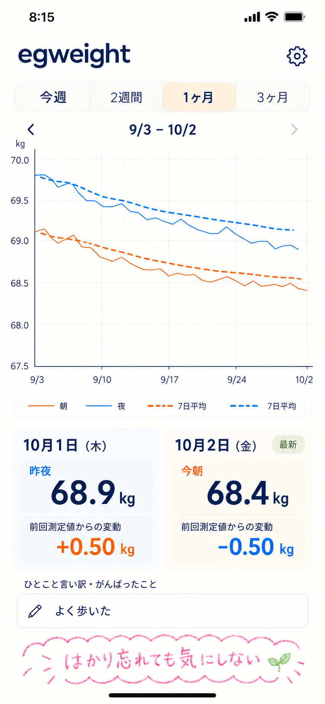
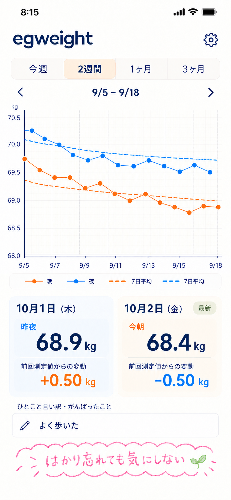

どんなアプリ？
egweight はAppleの「ヘルスケア」に保存された体重を、朝と夜に分けて折れ線グラフで振り返るiPhoneアプリです。
1回の増減だけで結論を出さず、朝は朝、夜は夜という同じ時間帯の変化を眺められるように。それぞれの移動平均を期間に応じて重ね、日々の数字と変化の傾向を一緒に確認できます。
数字にひとこと添える欄には、食事や日常の出来事、よく歩いたこと、測り忘れたことも気軽に。増減や欠測を責めず、また始めやすい「やさしい日記帳」を目指します。
はかり忘れても気にしない。
思い出したら再開して！
主な機能
ヘルスケアから体重と歩数を取得
体重を測定時刻で分類し、同じ時間帯に複数回測ったときは最後の測定値を使います。歩数も読み取り、1日10,000歩以上の日はその日の夜の測定カードにメダルを添えます。朝カードには付けず、カードでの歩数の数値表示は保留しています。日別一覧では歩数を数値で確認できます。体重・歩数をヘルスケアへ書き込むことはありません。
朝と夜を分けて表示
朝はオレンジ、夜は青。横の位置も少しずらして見分けやすくします。昼の記録は参考情報として持ち、グラフには朝と夜だけを表示します。
朝・夜それぞれの移動平均
グラフの平均日数は今週・2週間が7日、1ヶ月が15日、3ヶ月が45日です。日別詳細では直近7記録日の平均と測定日数を確認できます。測れなかった日を0kgとして計算することはありません。グラフの線は欠測を越えてつなぎますが、推定部分に測定点は付けず、最新の実測値より先へは延ばしません。
期間を動かして振り返る
今週・2週間・1ヶ月・3ヶ月を切り替え、矢印やグラフの左右スワイプで過去へ。下の最新測定値はそのままに、以前の変化を見られます。
日別一覧で記録を確認
日付・朝・夜・歩数・メダル・メモを1日1行にまとめ、最新の日付を上にして表示します。一覧も「やさしい日記帳」の雰囲気を引き継ぎ、年ごとの見出しと柔らかな表に分けています。朝か夜の片方が未測定なら空白にし、両方とも記録がない日は歩数があっても一覧から省きます。最初は測定のある日を60行まで表示し、ボタンで60行ずつ追加できます。一覧のメダルは日別の歩数で判定し、朝だけ測った日でも10,000歩以上ならメダルを表示します。コメントがある日はメダルの右にメモのアイコンを添え、行のどこをタップしてもコメントをポップアップで確認できます。
差分と、ひとことの振り返り
朝と夜、夜と翌朝の変動を確認し、アプリに設定された目安に応じてひとことの振り返りを促します。「ひとこと言い訳・がんばったこと」は注意の有無にかかわらず任意で記録できます。コメントは午前3時を境目とする記録日ごとに1件、最大500文字で保存し、再起動後も表示します。同じ日の編集と、設定からの日付別削除に対応しています。差分の目安を利用者が編集する機能は未実装です。
差分の目安は試用しながら調整します。数値の変化から、食べ過ぎ・運動量・体調の原因を判定する機能は設けません。
基本的な使い方
以下は現在のプロトタイプの操作です。試用を通じて調整を続けています。
- ヘルスケアと連携する。 egweightで体重と歩数の読み取りを許可します。使用する体重計や測定元アプリから、体重がヘルスケアに保存されていることが前提です。
- 自分のペースで測る。 朝だけ、夜だけ、測れない日があっても続けられる設計です。朝は03:00〜11:59、夜は18:00〜翌02:59に分類し、深夜の測定は前日の夜として扱います。
- グラフで変化を眺める。 期間を選び、＜ ＞または左右スワイプで1期間分ずつ移動します。上の日付範囲がグラフに連動し、下の最新値は維持されます。日付範囲のタップ、期間タブのダブルタップ、＞の右にある矢印で最新へ戻れます。
- 一覧で日々の記録を見る。 日付ごとの朝・夜の体重と歩数、メダルを確認します。最新の日から下へスクロールして、測定した日を振り返ります。
- ひとこと残す。 メモ欄をタップして、言い訳やがんばったことをその日のコメントとして記録します。同じ記録日の保存済みコメントは再起動後も表示し、一覧のメモのアイコンがある行をタップすると読めます。削除は設定から日付ごとに行えます。カードの変動とグラフの点では比較する測定が異なるため、詳細で比較元も確認できます。
| 期間 | 測定値の表示 |
|---|---|
| 今週（過去7日） | 前回の同じ時間帯からの増減を▲・▼・●で表示。比較元がなければ○ |
| 2週間（過去14日） | 測定点をすべて●で表示 |
| 1ヶ月（過去30日） | 点を表示しない、シンプルな折れ線 |
| 3ヶ月（過去90日） | 点を表示しない、シンプルな折れ線 |
平均線は今週・2週間が7日、1ヶ月が15日、3ヶ月が45日です。未来の日付へは進みません。今週の●は前回の同じ時間帯との差が−100g〜＋100gの場合。2週間の●は測定がある位置を示します。縦軸は整数kgだけに数字を付け、0.5kgの薄い破線も残します。横軸は4期間とも日付の中央を縦線の真下にそろえます。
画面のイメージ
やさしい配色と方眼グラフを中心にした、画像生成によるUIデザイン案です。日付・体重・メモは架空の例で、動作確認済みのアプリ画面ではありません。画像を選ぶと大きく表示できます。

測定点を省いた折れ線と、朝・夜の7日平均。UIデザイン案。

2週間の丸い測定点と左右の期間移動。UIデザイン案。
画像は初期の雰囲気と配置の参考です。点の位置や平均線の数値の正確さを示すものではありません。画像内の1ヶ月表示は7日平均ですが、現在の実装では15日平均です。実機スクリーンショットは準備でき次第掲載します。
利用に向けて
どの体重計でも使えますか？
ヘルスケアに体重が保存されることが前提です。体重計への直接接続は初期版の対象に含めず、使用する測定元アプリとの連携を実機で確認する予定です。
記録がない日や、片方しか測っていない日は？
測定値を作って補わず、ある記録を使って振り返ります。グラフの下では、右に最新、左にひとつ前の朝・夜の測定値を表示します。例えば3日ぶりに測った場合、左には前回の日付と「3日前」を併記します。カードの差分は同日の朝と夜、または前夜と翌朝がそろう場合に計算し、欠測を別の日の値で補いません。
体重やメモはどこに保存しますか？
体重・歩数の原本はヘルスケア、メモはバックアップ対象外の保護された端末内ファイルに保存します。同じアプリの再起動や上書き更新ではメモを維持しますが、アプリ削除・再インストール・機種変更では失われます。メモの移行・エクスポートは未実装です。旧ID版から新ID版へのメモ・設定の自動移行も行いません。
開発状況と公開について
プロトタイプ0.1.10（ビルド11）を試用中で、一般公開・配布していません。 ヘルスケア連携、計算、グラフ操作、コメント保存を実装しています。このサイトで公開しているのは紹介ページです。
最低対応OSはiOS 17です。iPhoneでの試用報告はありますが、歩数合計の整合、欠測を含む平均、深夜の境界、長期履歴、VoiceOverなどは引き続き確認します。TestFlightへのアップロード成功は未確認で、公開時期・一般向け配布方法・価格は未定です。ダウンロードや試用の募集は現在行っていません。
掲載内容は2026年11月14日にREADMEと照合しました。機能・操作・画面は今後変更される場合があります。健康状態や減量の成否を判断するアプリではなく、数値とメモを振り返るための道具として設計しています。背景更新とOS通知、睡眠スコアによる朝メダルは未実装です。